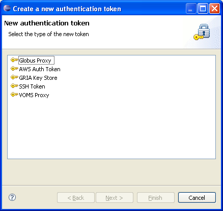

Access to remote Grid resources requires a system for a user and role based Authentication and Authorization. The Grid AA system relies on security tokens, which are created by the user. g-Eclipse offers a simple mechanism to deal with tokens for Authentication and Authorization. When the user wants to access a remote resource, g-Eclipse checks if an adequate token exists. If not, the user will automatically be asked to create a new authorization token. Optionally, Authorization tokens can be created from the g-Eclipse Authentication Tokens View. g-Eclipse will support different middleware independent implementations.
If an Authentication token is requested by a user action, the Wizard for Authentication Token will start with the following pop-up window.
If the user continues, the Wizard started with the selection for the type of Authentication/Authorization token to create. Chose one and continue with "Next" to specify further input data.
By selecting "Finish" the authentication token will be created and activated.
Alternatively an Authentication/Authorization Token can be created from the g-Eclipse Authentication View, by selecting the corresponding button (see figure).
The management of Authentication Token is described here.